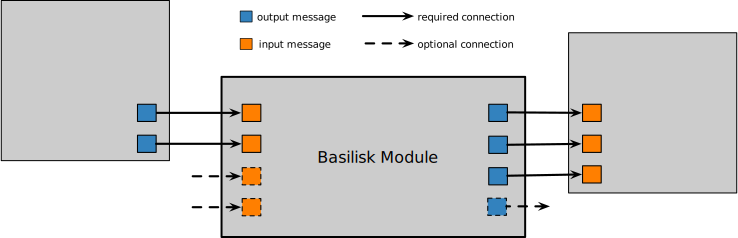
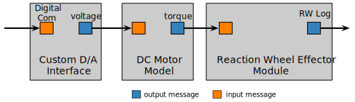

Module Design Considerations
The basic Basilisk module encapsulates some mathematical behavior of a spacecraft or the space environment. Information is passed along through the message passing interface. This consists of message objects which contain the message data and provide an outward message connection to interface with input message reader object. The later is able to pull the data of the outgoing message object and return a copy of the data structure. The short hand notation for these message objects is output and input message objects.
Message Connections
The illustration above shows how a module can contain multiple input and output messages. While some messages might be required for the module to properly function, other messages might be optional. For example, consider Module: mrpFeedback. The module has optional input messages that read in the reaction wheel states and configuration parameters. If these are provided, then the control mathematics includes their information. If they are not connected, then the module behavior simplifies to an attitude feedback control without reaction wheel devices.
One Big Module or Several Small Modules
As is typical with modular software, the question always arises on how large, or how small, should a module function be? The design goal should be flexibility and re-use of the modules. Think of all the math that goes into a module. Is this math only going to be used together as a unit? Or, could part of that math be used in conjunction with other modules as well. In the latter case it is recommended to break up the math into multiple modules.
For example, consider Module: reactionWheelStateEffector. The input message to this module an array of motor torques. However, some reaction wheel or RW devices have an analog or digital interface. This functionality is intentionally not included in Module: reactionWheelStateEffector such that the RW physics and the control interface can now readily be exchanged if needed. This idea is illustrated above where the RW physics is contained in a module separate from 2 other modules which contain the RW digital interface and the RW motor torque behavior. With this setup the Basilisk simulation can directly drive the RWs with commanded motor torque, or the simulation fidelity can be increased by include the motor behavior and/or the digital control interface.
Variable Number of Input or Output Messages
In some cases it makes sense to write the module such that it can handle a variable number of input and/or output messages. For C++ modules these are in the form of a std::vector of messages, or in C modules as an array of message objects. With C modules these arrays should be written as a fixed length array to avoid dynamic memory allocation. The C++ standard vector format has the advantage that an arbitrary number of messages can be added.
Consider Module: eclipse. The module has one input message that provides the sun location. However, instead of writing the module to only handle eclipse about a single planet at a time, the module is setup to handle the eclipse considering multiple planets. This way a simulation can be created where a spacecraft starts orbiting about Earth, then leaves the Earth system and arrives at Mars. As the eclipse of both Earth and Mars is considered, this single simulation seamlessly handles the eclipse considerations about both objects.
When writing a module with variable number of messages extra considerations should be taken. As a planet state input message is added to the eclipse module, the module also needs to increase the private vector of planet state message buffers. This is why this module does not have the user set the vector of planet input messages directly from python, but rather a module method called addPlanetToModel() is used. This method both controls the standard vector of input messages and private buffer message copies.
Further, this module is written to not only provide an eclipse output message for a single spacecraft, but rather a multitude of spacecraft can be considered. This avoids the user having to create eclipse modules for each spacecraft in the simulation, and add the planets to these modules. A lot of computation would be repeated in such a solution. Rather, by having the module read in the vector of planet messages and a vector of spacecraft messages much math can be combined. For this module an eclipse output message must be created for each spacecraft. Again this is a reason why the user does not set the vector of spacecraft state input messages directly, but rather a helper method is employed. In this case the addSpacecraftToModel() method
receives a spacecraft state message
adds it to the vector of input message
expands the private vector of spacecraft state input buffer variables
creates the corresponding spacecraft eclipse output message

To see how a C module handles a variable number of messages, see Module: navAggregate.